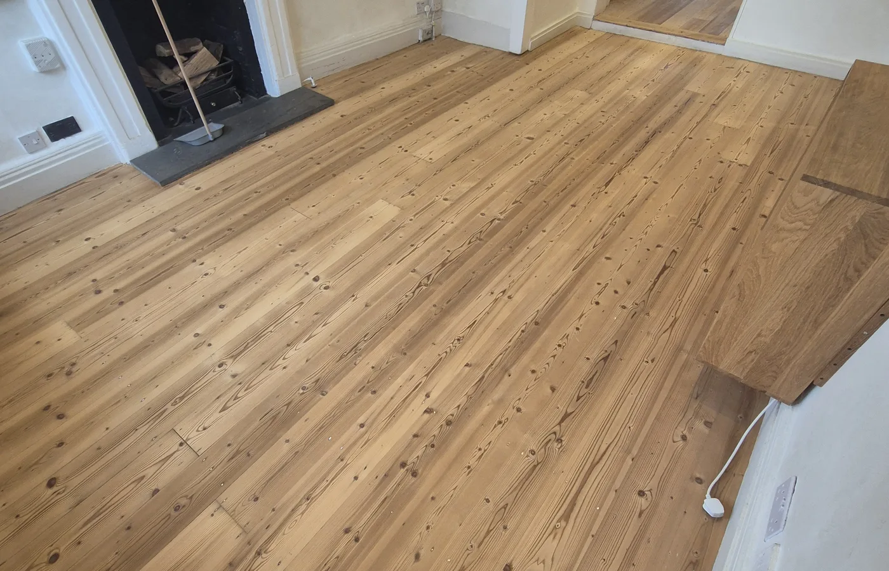
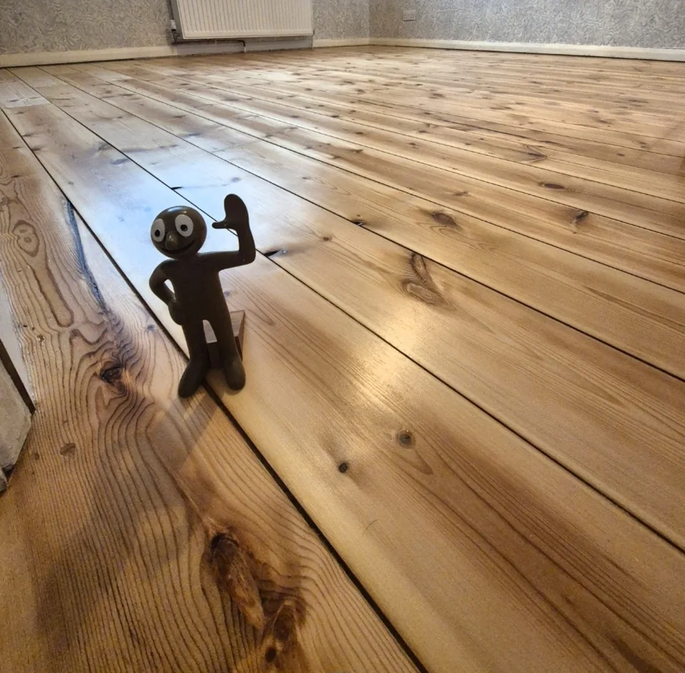
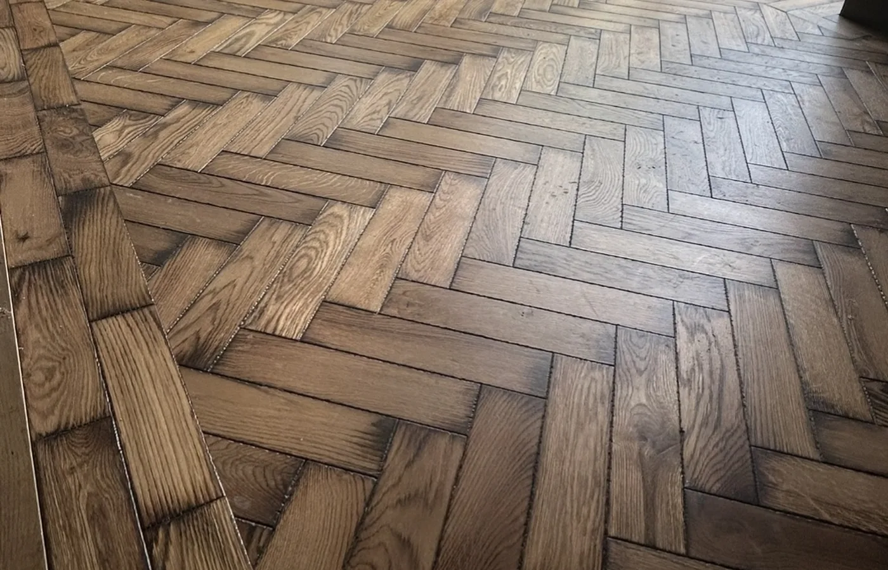
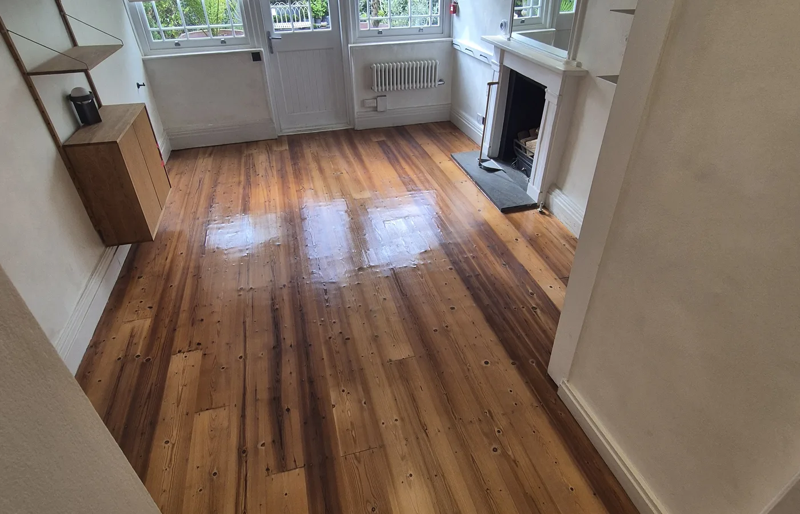
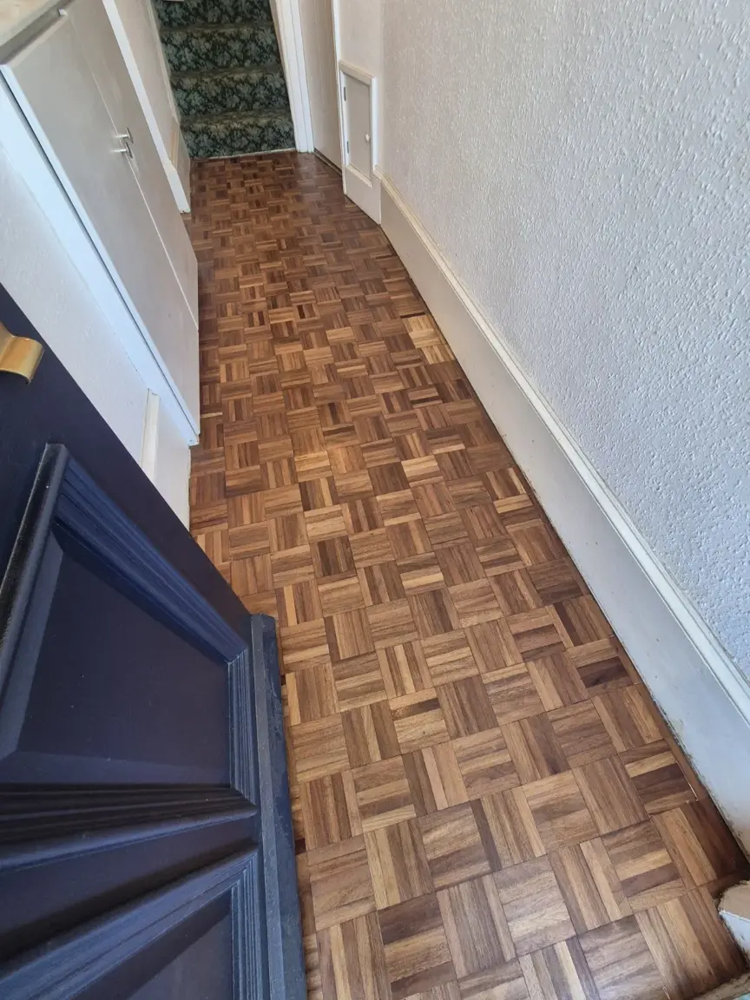

01 / RestoreBring your wood floor back to life.
Dust-controlled sanding, careful repairs and a natural or stained finish for floorboards, parquet and suitable engineered wood.
Floor sanding & restorationBeautiful wood floors. Restored or newly fitted by our family run team.
From original floorboards to a new herringbone floor. Steve & Keir bring care, experience and a proper finish to every project.
Not sure where to start? Ask us for advice
A real S&K restorationKeep the character you love. Or choose something new. We can help you find the right way forward.

01 / RestoreDust-controlled sanding, careful repairs and a natural or stained finish for floorboards, parquet and suitable engineered wood.
Floor sanding & restoration 02 / Install
02 / InstallEngineered wood, solid wood, laminate and parquet fitting. From checking the base to the last threshold and trim.
Explore our floor fitting service
Preparation. Precision. The finishing touches.A floor needs more than a good-looking board. We check the subfloor, discuss the layout and plan the edges before fitting begins.
Already chosen your flooring? Send us the product details and we can assess the fitting method and preparation it needs.
Get a fitting estimateCareful sanding reveals the timber beneath a tired finish. Repairs and a suitable coating bring the room together.
Drag the handle to compare our work
Explore this pine floor restoration
BeforeAfter
An existing basketweave parquet hallway in Eastbourne was repaired, sanded and refinished to restore its pattern and natural timber colour.
Explore the project
The base was prepared and parquet flooring installed with careful setting out, clean alignment and detailed perimeter work.
Explore the projectOriginal pine boards were sanded through the correct abrasive sequence and finished to retain a clean, natural timber appearance.
Explore the projectWe’re Steve & Keir. The family behind S&K Wood Floor Specialists.
With over 35 years of combined flooring experience, we bring practical advice and careful workmanship to both restoration and new installations. We are based in London and Eastbourne and work across the South East.
Tell us what you have in mind“Professionally done, very pleased with the result”
“Love my new floor”
“Friendly, helpful, efficient”
Floor sanding, repairs and new floor fitting across East Sussex and London. We also assess projects in Kent, Surrey, West Sussex and Essex.
Explore our East Sussex sanding serviceEvery floor is different. A few photos are a useful place to start.
Send us the product link or specification. We will check the flooring and proposed fitting method against your room and subfloor before confirming the work.
That depends on its construction and condition. Many solid wood and parquet floors can be restored. Engineered wood needs enough usable wear layer. We can assess the floor and explain your options.
We assess flatness, stability and moisture conditions where appropriate. Any preparation needed is set out in your quotation so you know what is included.
No sanding process is completely dust-free. Our professional equipment and extraction control dust to reduce disruption.
Tell us what needs moving or removing when you enquire. Furniture, uplift and waste removal can be discussed and included in the agreed scope where practical.
Send your postcode, a few measurements and some details. Steve & Keir will help you work out the next step.
07711 987399info@skwoodfloorspecialists.co.uk